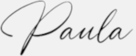

About me
My name is Paula, I am a Cloud engineer currently living in the sunny Barcelona.
I have a degree in Computer science from Vigo University.
In 2017 I got into Cloud Computing and I've been working with: Docker, K8s, Istio, Terraform, Helm, Jenkins.
I have hands-on experience in technical support and system administration, especially with GCP.
I am always open to feedback and I listen actively to all opinions and points of view.
I'm a tech oriented person with a logical and practical mindset, self-organized and with good documentation skills.
I have a collaborative mindset, I believe in teamplay as a life strategy.
I am currently open to listen to remote job opportunities.

Career
Click the image to download my resume.